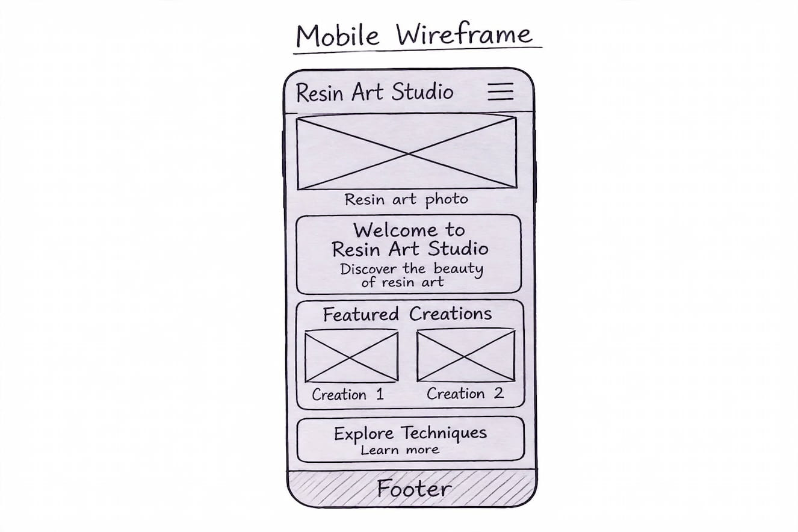
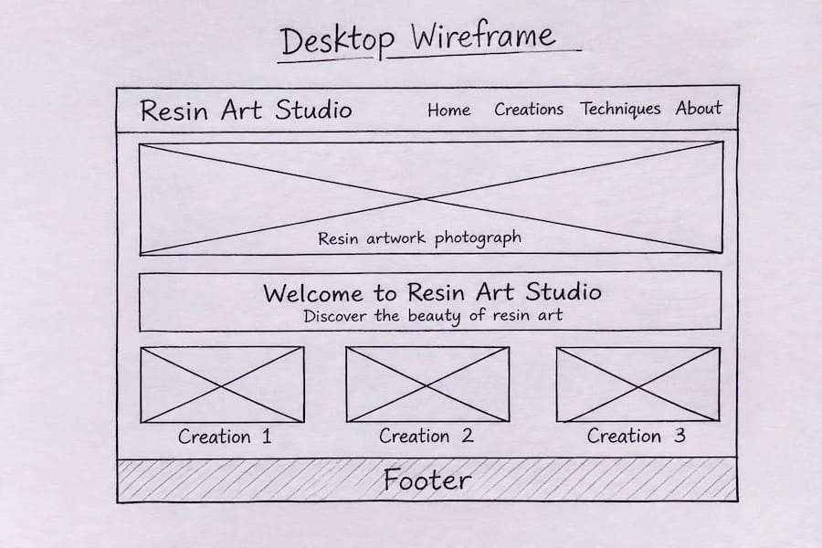

1. Site Name
Resin Art Studio
The name Resin Art Studio represents a creative space dedicated to exploring resin art, handmade products, and artistic ideas. It was chosen because it clearly communicates the subject of the website and the creativity involved in making resin crafts.
2. Site Purpose
Resin Art Studio is an informative and creative website designed to introduce visitors to resin art and handmade resin products. The website will showcase different resin creations, explain the materials and tools used in making them, and share techniques and ideas for beginners and people interested in resin crafts. Visitors will be able to explore product examples, learn about resin art, and discover creative project ideas.
3. Scenarios
These are questions visitors might ask when using the website:
- What types of products can be created using epoxy resin?
- What materials and tools do I need to start making resin art?
- How can I create colourful designs using mica powders and pigments?
- What safety precautions should beginners follow when working with resin?
4. Color Scheme
The website will use the following colors:
- Deep Blue (#24476B): Used for the header, footer, and main headings.
- Purple (#7955A6): Used for section accents, buttons, and highlights.
- White (#FFFFFF): Used for content backgrounds and the main page.
5. Typography
The website will use two font families:
Poppins
Resin Art Studio
Used for page headings and section headings.
Roboto
Discover the beauty of resin art and handmade creations.
Used for paragraphs and general body text.
6. Wireframe
The following wireframes show the planned homepage layout for mobile and desktop screens.
Mobile View

Desktop View
